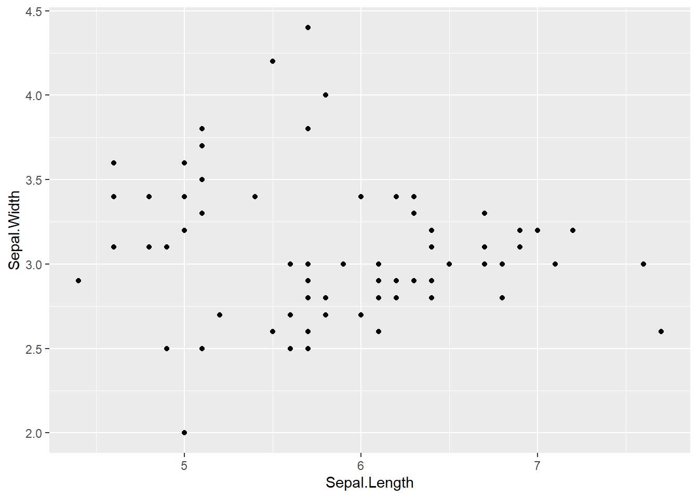

library(reticulate)よりも前にこれを実行しておいた方がいいかもしれないSys.which('python')とかがpythonの場所を探すのに役に立った記憶
repl_pythonと打つこれを実行すると，コンソールが次のように変わる
repl_python()
Python 3.8.3 (C:/Users/うんたら/かんたら/Python/Python38/python.exe)
Reticulate 1.16 REPL -- A Python interpreter in R.
>>>最後の>>>が，コンソールがpythonコマンドを受け付けている目印になる。 通常のRに戻るときはquitと打つ。（それかスクリプトからRのコードを走らせる）
repl_pythonをチャンク上で実行するとなぜかフリーズするので注意）hallo world> reticulate::repl_python()
Python 3.8.3 (C:/Users/うんたら/かんたら/Python/Python38/python.exe)
Reticulate 1.16 REPL -- A Python interpreter in R.
>>> print("hallo world")
hallo world
>>> 82155.0#ライブラリを使用する
簡単にirisを使う
Sepal.Length Sepal.Width Petal.Length Petal.Width Species
1 5.1 3.5 1.4 0.2 setosa
2 4.9 3.0 1.4 0.2 setosa
3 4.7 3.2 1.3 0.2 setosa
4 4.6 3.1 1.5 0.2 setosa
5 5.0 3.6 1.4 0.2 setosa
6 5.4 3.9 1.7 0.4 setosa
7 4.6 3.4 1.4 0.3 setosa
8 5.0 3.4 1.5 0.2 setosa
9 4.4 2.9 1.4 0.2 setosa
10 4.9 3.1 1.5 0.1 setosar.でアクセスする（参考） Sepal.Length Sepal.Width Petal.Length Petal.Width Species
0 5.1 3.5 1.4 0.2 setosa
1 4.9 3.0 1.4 0.2 setosa
2 4.7 3.2 1.3 0.2 setosa
3 4.6 3.1 1.5 0.2 setosa
4 5.0 3.6 1.4 0.2 setosa
.. ... ... ... ... ...
145 6.7 3.0 5.2 2.3 virginica
146 6.3 2.5 5.0 1.9 virginica
147 6.5 3.0 5.2 2.0 virginica
148 6.2 3.4 5.4 2.3 virginica
149 5.9 3.0 5.1 1.8 virginica
[150 rows x 5 columns] Sepal.Length Sepal.Width Petal.Length Petal.Width
count 150.000000 150.000000 150.000000 150.000000
mean 5.843333 3.057333 3.758000 1.199333
std 0.828066 0.435866 1.765298 0.762238
min 4.300000 2.000000 1.000000 0.100000
25% 5.100000 2.800000 1.600000 0.300000
50% 5.800000 3.000000 4.350000 1.300000
75% 6.400000 3.300000 5.100000 1.800000
max 7.900000 4.400000 6.900000 2.500000iris_sampleをR側で受け取るreticulate::py_to_rを利用するpy$を使うpy_to_rを使わなくてもデータフレームになってる… Sepal.Length Sepal.Width Petal.Length Petal.Width
61 5.9 3.0 4.2 1.5
50 7.0 3.2 4.7 1.4
87 6.3 2.3 4.4 1.3
143 6.8 3.2 5.9 2.3
110 6.5 3.2 5.1 2.0
36 5.5 3.5 1.3 0.2
31 5.4 3.4 1.5 0.4
72 6.3 2.5 4.9 1.5
97 6.2 2.9 4.3 1.3
105 7.6 3.0 6.6 2.1